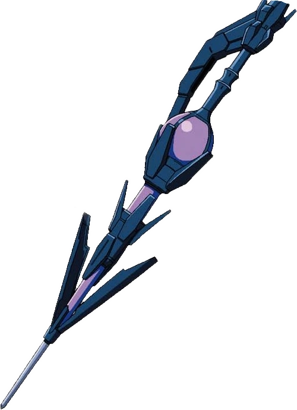

Description
Spuit Lance was given to Shalltear Bloodfallen by her creator Peroroncino. Spuit Lance is regarded as a prime example of customization using data crystals that could absorb a certain amount of damage to recover the equipment user’s health.
- Appearance
The lance has the appearance of a giant, bizarre-shaped spear, similar to a dropper.
- Abilities
This weapon has a special ability that returned a portion of the damage dealt to heal the wielder. The healing ability of the Spuit Lance depends on the amount of damage inflicted upon a target.
- Trivia
Despite its formidable power, the lance is ill-suited for nimble movement.
In midst of Shalltear's duel with Ainz, she summoned her familiars and killed them using her Spuit Lance to recover the stamina she lost.
So far, it has only been used three times throughout the Overlord series. This includes the Bloody Valkyrie Arc, the Craftsman of Dwarf Arc and the Sealed Evil Tree Arc.
|